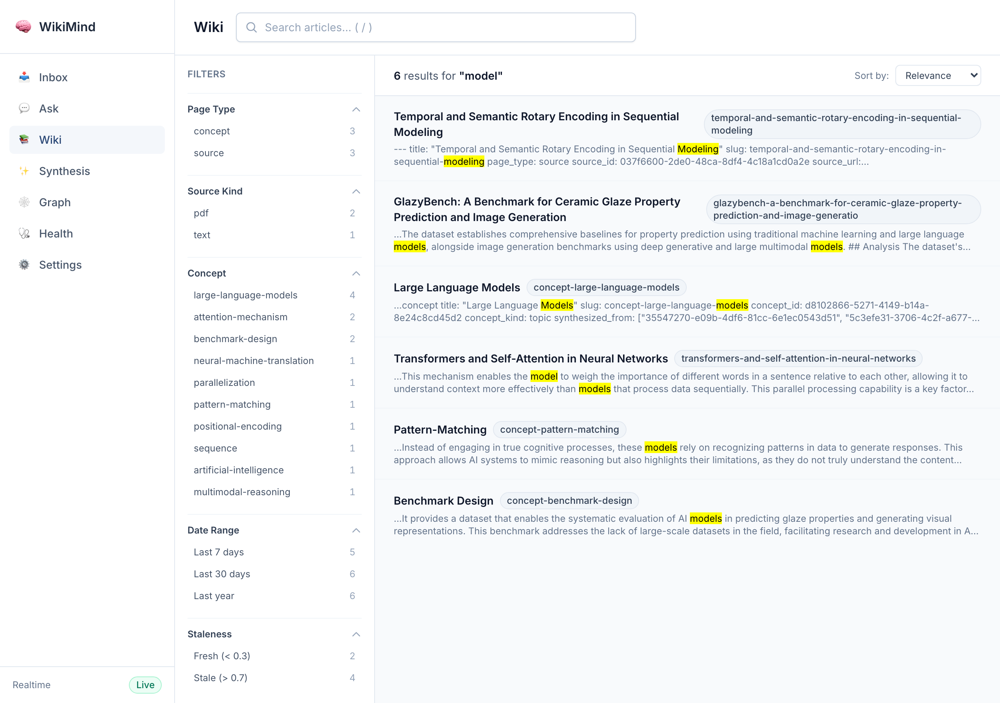

/api/wiki/search/facets endpoint returns bucket counts for each facet dimension.
All responses below are real, captured from the running server authenticated as dev@wikimind.dev.
q=machine200 OK 10 results Results ranked by FTS relevance with <mark> highlights in snippets.
| # | Title | Page Type | Rank |
|---|---|---|---|
| 1 | Machine Learning Fundamentals | source | -1.224 |
| 2 | Neural Networks in the Context of Machine Learning | synthesis | -1.217 |
| 3 | Support Vector Machines (SVMs) | concept | -1.217 |
| 4 | Machine Learning Fundamentals | source | -1.214 |
| 5 | Gradient Descent in Machine Learning | concept | -1.203 |
| 6 | Deep Learning | concept | -1.192 |
| 7 | Artificial Intelligence | concept | -1.188 |
| 8 | Neural Networks | concept | -1.120 |
| 9 | GlazyBench: Ceramic Glaze Prediction... | source | -1.087 |
| 10 | Theoretical Computer Science | concept | -0.630 |
q=machine200 OK Returns 5 facet dimensions with bucket counts across 10 matching articles.
q=machine&page_type=source200 OK 3 results Filtered from 10 total down to 3 source-type articles only. Matches the facet count of page_type: source = 3.
| # | Title | Slug | Rank |
|---|---|---|---|
| 1 | Machine Learning Fundamentals | machine-learning-fundamentals-2 | -1.224 |
| 2 | Machine Learning Fundamentals | machine-learning-fundamentals-3 | -1.214 |
| 3 | GlazyBench: Ceramic Glaze Prediction... | glazybench-a-benchmark-for-ceramic-... | -1.087 |
| Check | Result |
|---|---|
Full-text search returns ranked results with <mark> highlights | PASS -- 10 results returned |
| Facets endpoint returns 5 dimensions (page_type, source_kind, concept, date, staleness) | PASS -- all 5 facets present |
| Facet counts are consistent (page_type: 6+3+1 = 10 = total) | PASS -- sums match total |
Filtered search page_type=source narrows results correctly | PASS -- 3 results (matches facet bucket) |
| All requests authenticated with Bearer token | PASS -- 200 OK on all |
Search for "machine" showing: Page Type, Source Kind, Concept (5 concepts), Date Range, Staleness filters. Results highlighted with <mark> tags.
Typing "machine learning" shows autocomplete dropdown with matching articles, plus card grid behind with Source/Concept badges.

Captured 2026-05-09 from live server at 127.0.0.1:7842 with auth enabled (dev@wikimind.dev). All responses are real API output, not fabricated.
Captured via authenticated Playwright from wikimind.fly.dev